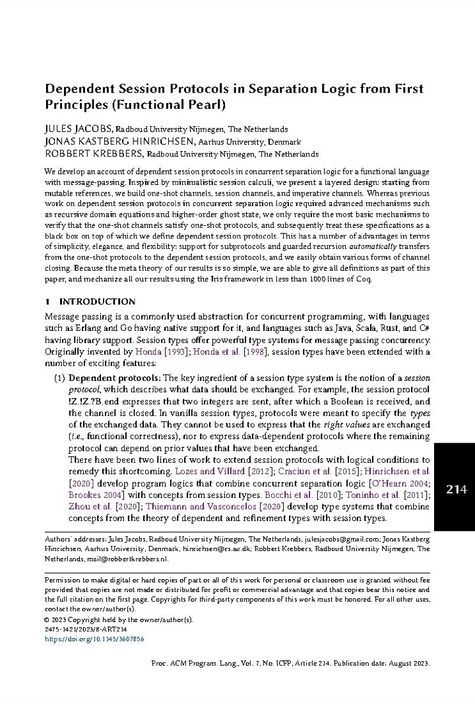

Earlier separation logics for dependent session protocols needed recursive domain equations and higher-order ghost state. This paper builds session channels in layers on one-shot channels, verifies those with basic mechanisms only, and defines dependent session protocols on top. Subprotocols, guarded recursion and channel closing come along, and everything is mechanized in Iris in under 1000 lines of Coq.

Read the paperWe develop an account of dependent session protocols in concurrent separation logic for a functional language with message-passing. Inspired by minimalistic session calculi, we present a layered design: starting from mutable references, we build one-shot channels, session channels, and imperative channels. Whereas previous work on dependent session protocols in concurrent separation logic required advanced mechanisms such as recursive domain equations and higher-order ghost state, we only require the most basic mechanisms to verify that the one-shot channels satisfy one-shot protocols, and subsequently treat these specifications as a black box on top of which we define dependent session protocols. This has a number of advantages in terms of simplicity, elegance, and flexibility: support for subprotocols and guarded recursion automatically transfers from the one-shot protocols to the dependent session protocols, and we easily obtain various forms of channel closing. Because the meta theory of our results is so simple, we are able to give all definitions as part of this paper, and mechanize all our results using the Iris framework in less than 1000 lines of Coq.
@article{jacobs2023miniactris,
title = {Dependent Session Protocols in Separation Logic from First Principles (Functional Pearl)},
volume = {7},
ISSN = {2475-1421},
url = {https://doi.org/10.1145/3607856},
DOI = {10.1145/3607856},
number = {ICFP},
journal = {Proceedings of the ACM on Programming Languages},
publisher = {Association for Computing Machinery (ACM)},
author = {Jacobs, Jules and Hinrichsen, Jonas Kastberg and Krebbers, Robbert},
year = {2023},
month = Aug,
pages = {768--795}
}